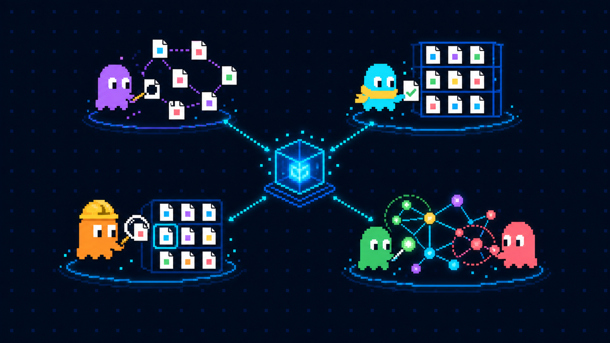
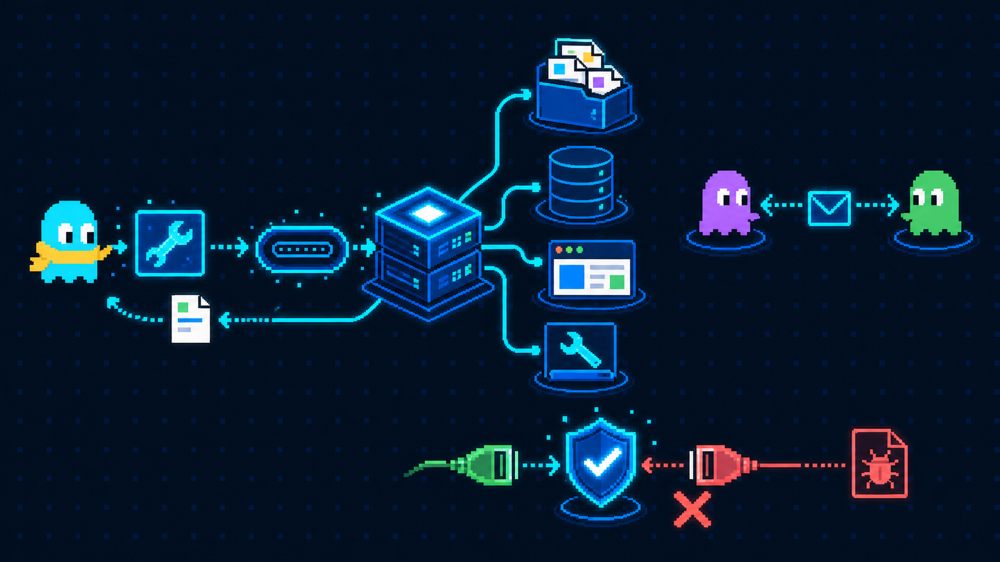

00
지식 시스템 4역할
같은 지식을 저장하고, 정리하고, 찾아 쓰고, 관계로 추론하는 장면

한 지식, 네 역할
네 시스템은 순서가 아닌 역할의 조합
00+
MCP · A2A 연결 규격
MCP는 에이전트와 도구·데이터를, A2A는 에이전트끼리를 잇는 장면

LLM용 공용 포트
Tool Call → MCP → 도구 · A2A는 에이전트 간 연결
01
표지
팀의 성격을 첫눈에 보여주는 장면
02
하네스
자율성은 살리고 실패 공간은 줄이는 장면
03
멀티에이전트
에이전트 수보다 역할과 연결 방식을 보여주는 장면
04
메모리·LLM 위키
찾고, 고르고, 다음 세션에 남기는 장면
선택 방법 각 장면에서 한 장씩 누르세요. 상단의 ‘내 선택’이 자동으로 바뀌며, 새로 열어도 선택이 유지됩니다.